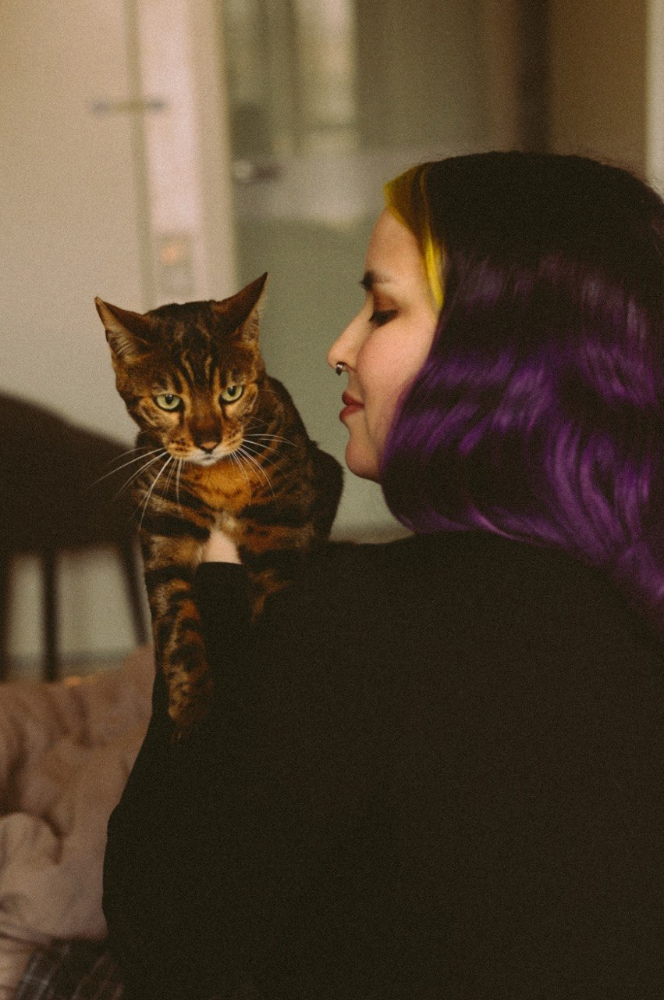

Было
Брифы не дают креаторам достаточно информации о бренде клиента, фокусируются скорее на сроках и бюджетах.
Стало
Я создала три новых варианта брифа, протестировала их и оставила самый удобный по версии отдела креатива.

fashion · horeca · fmcg
beauty · kids · e-com
Идеи, которые
попадают в сердце
Придумываю идеи, которые легко встраиваются в процессы, отражают голос бренда и попадают в сердце аудитории.
Умею выстраивать из креатива систему, брифовать команду продакшна и вести авторский надзор, работать с тоном и стилем. Вижу проект как целое — от идеи до реализации и анонсирования.
Мои любимые категории клиентов — FMCG, HoReCa, одежда и аксессуары, бьюти, детские товары. Очень люблю животных, в свободное время дрессирую собаку, занимаюсь вокалом и играю в видеоигры.
Креатив становится сильнее, когда команда не тратит энергию на хаос.
Брифы не дают креаторам достаточно информации о бренде клиента, фокусируются скорее на сроках и бюджетах.
Я создала три новых варианта брифа, протестировала их и оставила самый удобный по версии отдела креатива.
Дизайнеры не успевают делать мокапы для продающих презентаций, а у креаторов нет навыков дизайна.
Совместно с лидом отдела дизайна мы создали банк шаблонов мокапов и обучили креаторов работе с ними. Это позволило ускорить подготовку предложения в среднем на неделю.
Дизайнеры часто с ошибками переносили тексты в макеты лендингов. Это порождало негатив, в среднем день тратился на выяснение, кто виноват.
Я создала и согласовала с отделом дизайна процесс текст-ревью и внесения правок на готовом макете. Прозрачный процесс помог не тратить время и ресурс на обвинения.
Больше половины клиентов хотят похожие проекты, при этом каждый такой проект создаётся с нуля, что тратит ресурс разработки и увеличивает сроки.
Я предложила внедрить конструктор самых популярных механик, что позволило увеличить количество проектов в пиковые сезоны.
Есть задача, инфоповод или просто нужна рабочая идея? Напиши — обсудим!